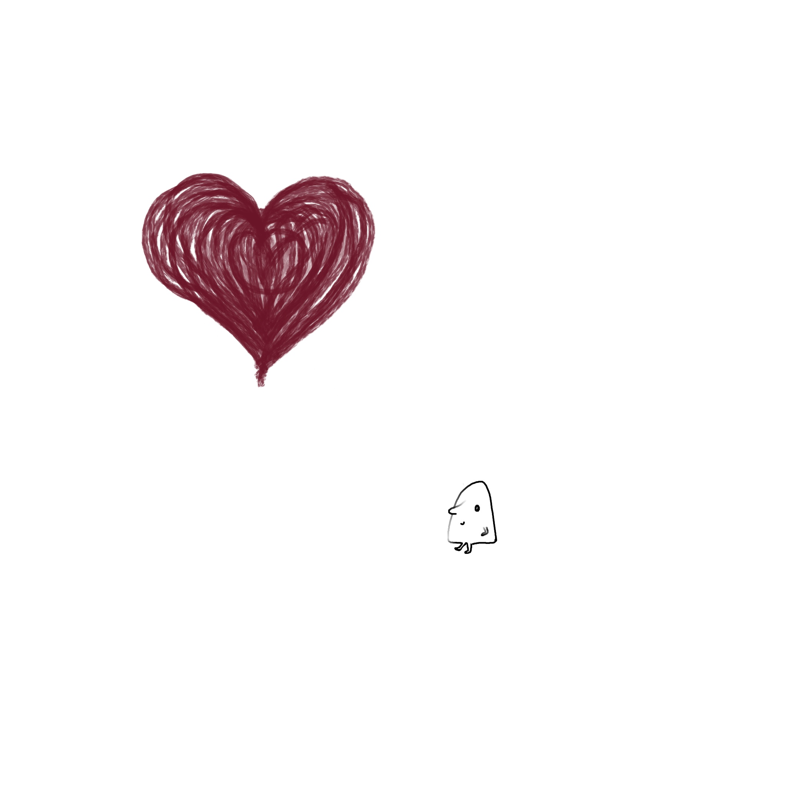

markdown showcase (art)

The gallery grid on tactile links here. Gifs work the same way as stills.
A little animated guy walking over and tapping into a heart and taking a little sip… currently working on moving his toes for hime to wlak over